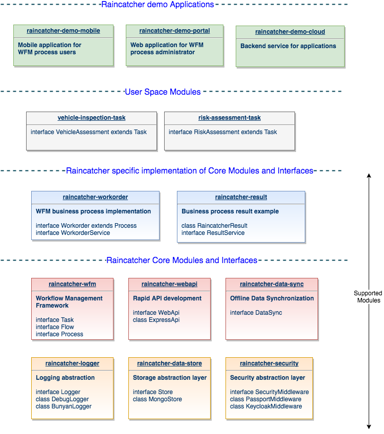

import Implementation, { PublicInterface } from '@raincatcher/module';This section provides a overview of RainCatcher documentation. You can read this document in a linear fashion, or you can skip sections if something doesn’t interest you.
The RainCatcher documentation is available as html files generated from ascidocs documents. You can view source code of this page on github: http://github.com/feedhenry-raincatcher/feedhenry-raincatcher.github.io
To quickly start write mobile enabled Workflow Managment applications please follow our guides:
WFM Guide Getting Started for Workflow Management Solutions.
Framework Guide Getting Started with RainCatcher core components.
RainCatcher consist of set of node.js modules written in TypeScript language that are packaged and distributed as RainCatcher provides a set of reusable components that can simplify mobile, web and cloud application development. Solution allows developers to write secure, offline ready websites and mobile applications. RainCatcher provides Workforce Managment oriented framework for Workforce Management applications.
Solution consist of two fully independent frameworks: * Workflow Managment Framework * Rapid Application Development Framework
As extension to frameworks above RainCatcher provides set of example module implementations as part of demo applications.
RainCatcher Workflow Managment Framework build BPMN compliant workflow management solution. WFM framework allows to build advanced Business Process Management solutions. Framework helps to write solutions that connects a business back-office with its fleet of mobilized employees.
Task: defines single unit of work for business process
Flow: contain ordered set of tasks and handlers for executing tasks in proper order
Process: instance of flow containing current progress and business objects.
Users can write custom Tasks (Workflow Steps) that will implement any business logic and link implementation with any UI solution. Framework abstract from any web or mobile application libraries, allowing developers to focus on impmentation of the process.
RainCatcher Rapid Application Development Framework allows to build production-grade Node.js and Cordova based applications.
Main targets for framework:
Rapid, production ready application development framework.
Covers Mobile, web and server side application development
Written in TypeScript (with support JavaScript development)
Secure out of the box thanks to multiple security providers (Keycloak, Passport.js)
Full support for offline enabled applications thanks to FeedHenry Sync
Extensibility provided by set of TypeScript based interfaces
Provide A sleek, modern, mobile enabled front-end reference applications
Provides abstraction layer for common application elements:
Data access
Security
Logging
Restfull API creation
Unit testing
Framework abstract from any application logic and technologies allowing developers to extend it for their needs.
Set of example implementations for Workflow Managment Solutions (Workorder, WorkorderResult)
Website, Mobile and server demo applications serving as reference implementation for the framework.

RainCatcher modules are written in TypeScript.
The main files are modules that by default export a class containing the main implementation for the module’s intent,with a named export containing a public interface that should be depended upon, and reimplemented.
import Implementation, { PublicInterface } from '@raincatcher/module';Each module exports by default an implementation and set of interfaces by name. Default implementation will usually implement most common use case for module. Along with the default export, all modules include a public interface definition that are depended upon by other RainCatcher modules instead of depending on the implementation itself. = RainCatcher Core Modules
RainCatcher solution is distributed as set of node.js modules. Modules provide abstraction layer and can be extended thanks to provided set of interfaces and abstract implementations. Please follow sections bellow for complete list of supported modules
Security implementation:
Keycloak ()
Passport.js
Elements to be covered
Session Management
Access Control
Password Storage
Data state in Transit, on Disk, in Device
Authentication
Keycloak Security
Passport.js
Offline Access
Pin Security